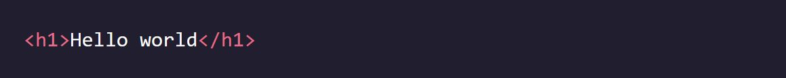

Codecademy - Learn React: Introduction
Notes taken while going through the Codecademy Learn React: Introduction course
Intro to JSX
Why React
- React is known for its speed and responsiveness, allowing apps to handle complex updates efficiently.
- React promotes modularity by breaking down code into smaller, reusable components, improving maintainability.
- It excels in scalability, making it suitable for large programs that involve frequent data changes.
- React is flexible and can be used for various projects beyond web app development, opening up opportunities for exploration.
- React's popularity in the industry makes learning and understanding it valuable, enhancing employability prospects.
What is JSX?
- JSX is a syntax extension for JavaScript used with React.
- JSX code resembles HTML and is written within JavaScript files.
- JSX is not valid JavaScript, so it needs to be compiled before it can be understood by web browsers.
- A JSX compiler translates JSX code into regular JavaScript.
- The compilation process ensures that the JavaScript file containing JSX is compatible with web browsers.

JSX Elements
- A JSX element is the basic unit of JSX syntax.
- JSX elements resemble HTML syntax. 
- JSX elements are typically written within JavaScript files.
- JSX elements can be similar to their HTML counterparts but are found within JavaScript files instead of HTML files.
JSX Elements & their Surroundings
- JSX elements are treated as JavaScript expressions and can be used anywhere JavaScript expressions are allowed.
- JSX elements can be saved in variables:
- JSX elements can be stored in objects or arrays:
- JSX elements offer flexibility and can be manipulated and used like any other JavaScript expression.
Attributes in JSX
- JSX elements can have attributes similar to HTML elements.
- JSX attributes follow an HTML-like syntax: name="value" format.
- Attribute values are typically wrapped in quotes.
- A single JSX element can have many attributes, just like in HTML:

Nested JSX
- JSX elements can be nested inside other JSX elements, similar to HTML.
- For better readability, you can use line breaks and indentation, similar to HTML:
- If a JSX expression spans multiple lines, it should be wrapped in parentheses.
- Nested JSX expressions can be assigned to variables or passed to functions like non-nested JSX expressions:


JSX Outer Elements
- A JSX expression must have exactly one outermost element.
- The opening tag of the JSX expression and the closing tag must belong to the same JSX element.
- The following would work fine:
- But this would not work and would throw errors:
- If you encounter an error due to multiple outer elements, the solution is to wrap the JSX expression in a
element or any other suitable parent element.
Rendering JSX Explained
- Rendering in React involves specifying what content to render and where to place that content.
- The render() method is used to render JSX expressions.
- To determine where to place the content, the first line uses the getElementById() method of the document object to get the HTML element with the specified ID ('app' in this case) and stores it in the container variable.
- The createRoot() function from the react-dom/client library is used to create a React root from the container, and the resulting root is stored in the root variable. This establishes the target location for rendering the content.
- Finally, the render() method of the root object is called, passing in the JSX expression (
Hello world
) as the content to be rendered. This triggers the rendering process, displaying the specified content in the designated location.

Passing a Variable to render()
- The render() method in React can accept a variable as its argument, as long as the variable evaluates to a JSX expression.
- In the example, a JSX expression representing a to-do list is saved in the toDoList variable.
- The createRoot() function is used to create a React root from the container element.
- The render() method of the root object is called, and the toDoList variable is passed as the argument. The JSX expression stored in toDoList will be evaluated and rendered in the designated location.

- The Virtual DOM
- When using the render() method in React, it only updates the DOM elements that have changed.
- If the exact same JSX expression is rendered twice in a row, the second render will not make any changes to the DOM.
- React achieves this efficient update process by utilizing the concept of the Virtual DOM.
- The Virtual DOM is a lightweight representation of the actual DOM.
- When changes are made to the React components, React compares the Virtual DOM with the previous version to identify the specific elements that need to be updated.
- Only the necessary changes are then applied to the real DOM, resulting in better performance and efficiency.
- The use of the Virtual DOM is one of the key factors contributing to React's success in efficiently updating and rendering UI components.

Review: Intro to JSX
- React is a modular, scalable, flexible, and popular front-end framework.
- JSX is a syntax extension for JavaScript which allows us to treat HTML as expressions.
- They can be stored in variables, objects, arrays, and more!
- JSX elements can have attributes and be nested within each other, just like in HTML.
- JSX must have exactly one outer element, and other elements can be nested inside.
- createRoot() from react-dom/client can be used to create a React root at the specified DOM element.
- A React root’s render() method can be used to render JSX on the screen.
- A React root’s render() method only updates DOM elements that have changed using the virtual DOM.